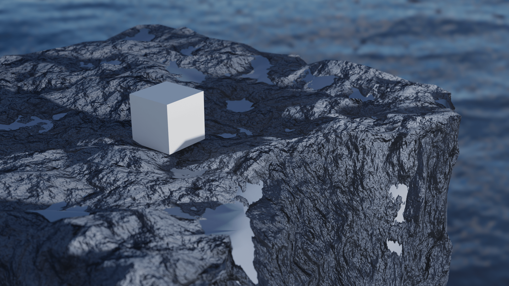
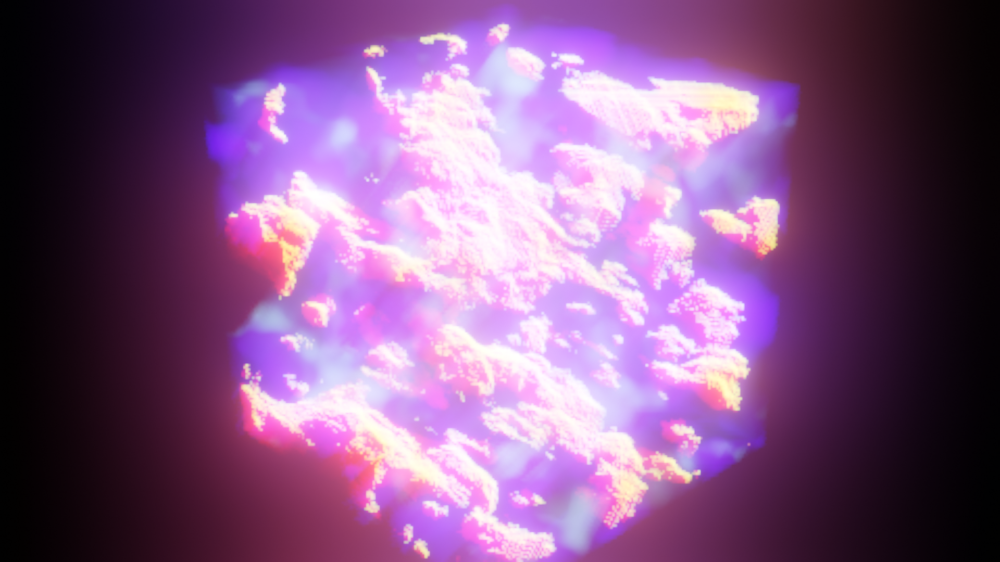
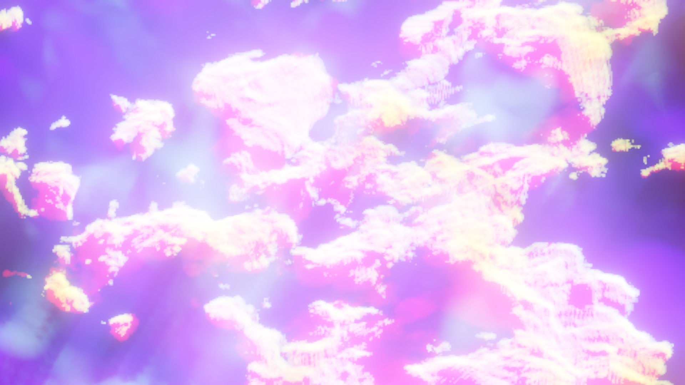
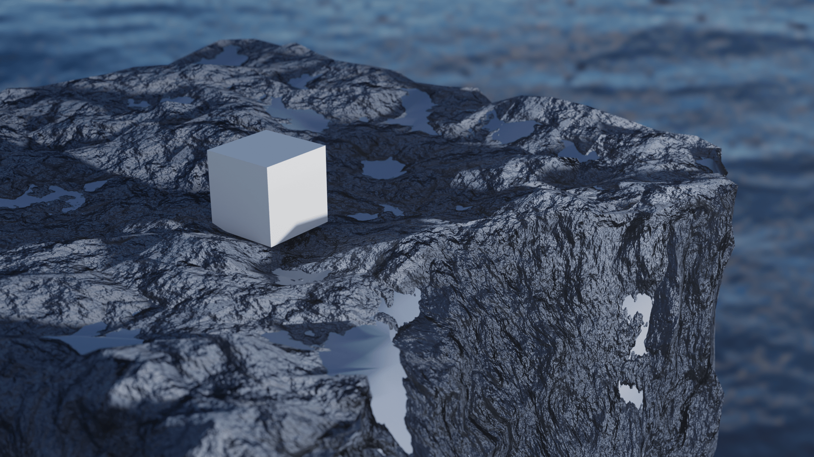
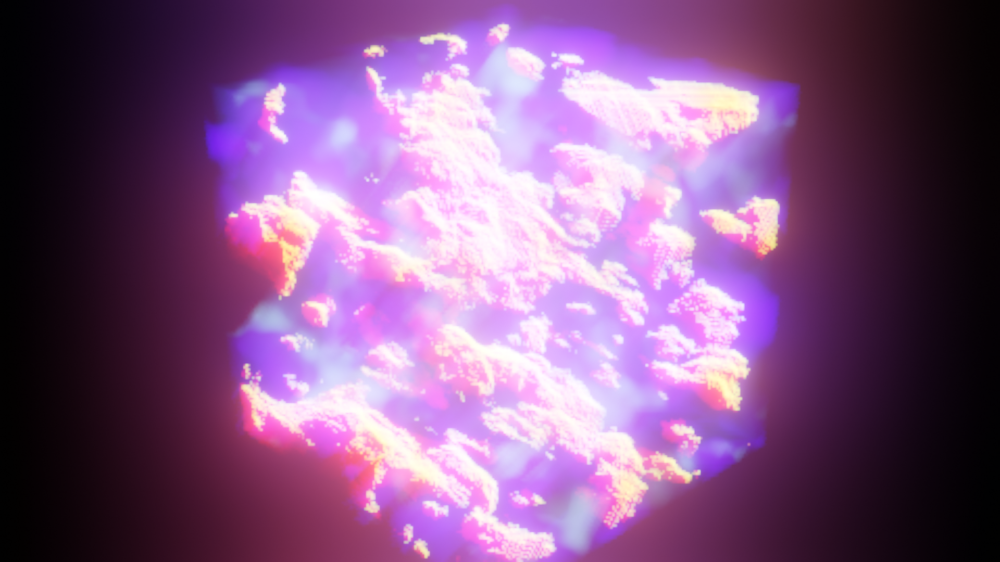
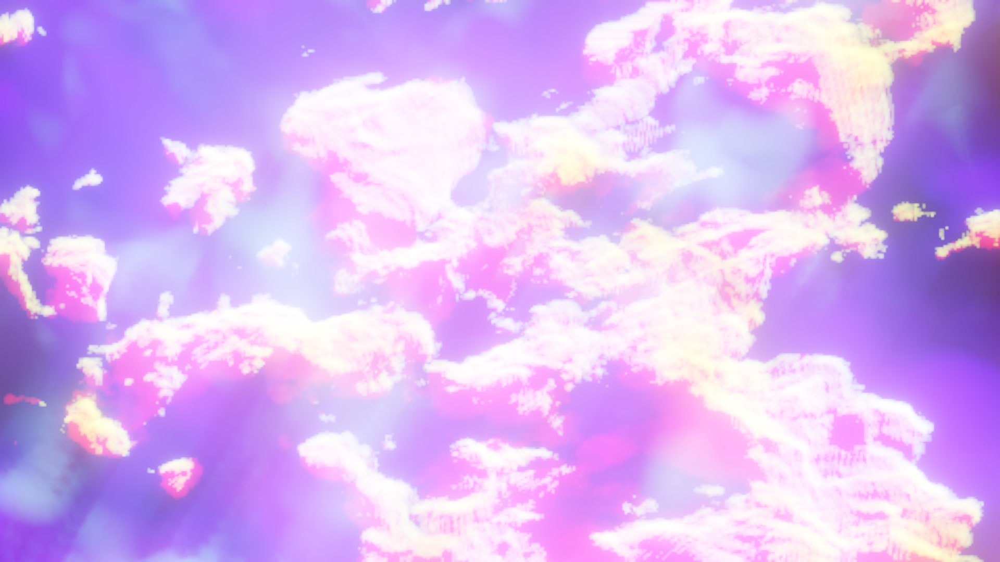

Procedural Textures in Blender
Procedural textures in Blender are textures generated algorithmically using mathematical functions rather than relying on image-based maps. They are created within Blender's node-based material system, primarily using the Shader Editor, where nodes like Noise, Voronoi, Musgrave, and Wave are combined to produce complex patterns such as marble, wood, stone, or abstract designs. Unlike traditional textures, procedural textures are resolution-independent, meaning they can be scaled infinitely without losing quality, and they are highly customizable through parameters like scale, distortion, and color. This approach allows artists to create seamless, realistic, or stylized materials directly in Blender, saving memory and enabling dynamic adjustments without the need for external image files.


 




